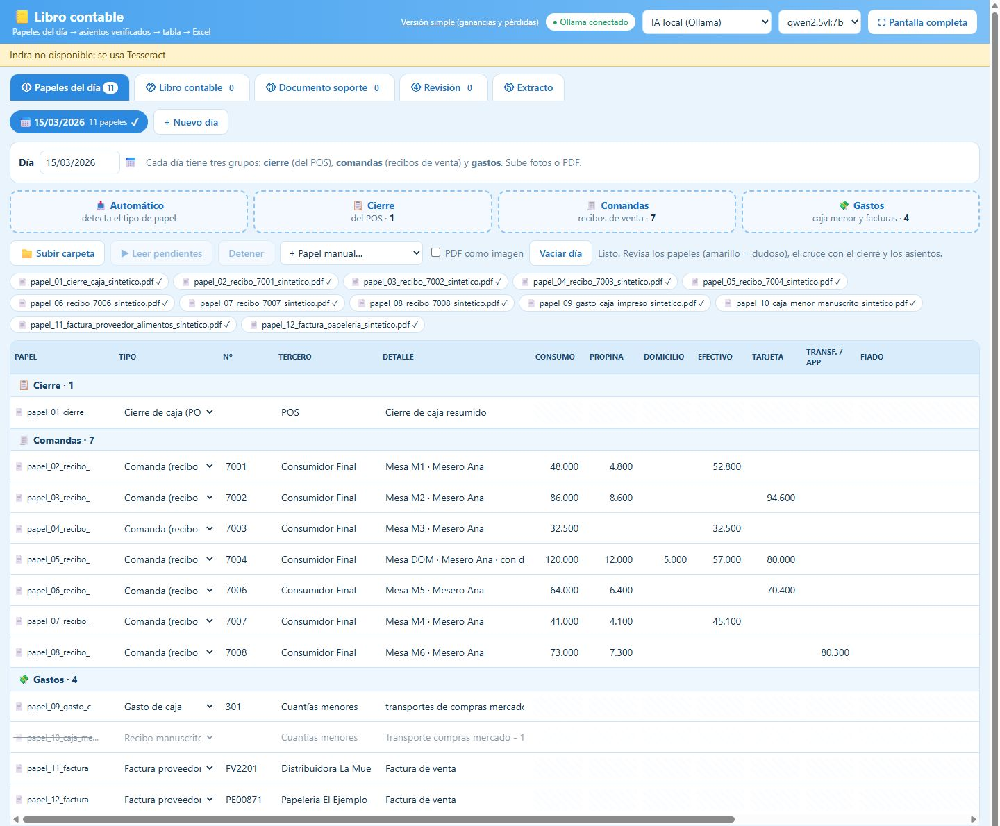
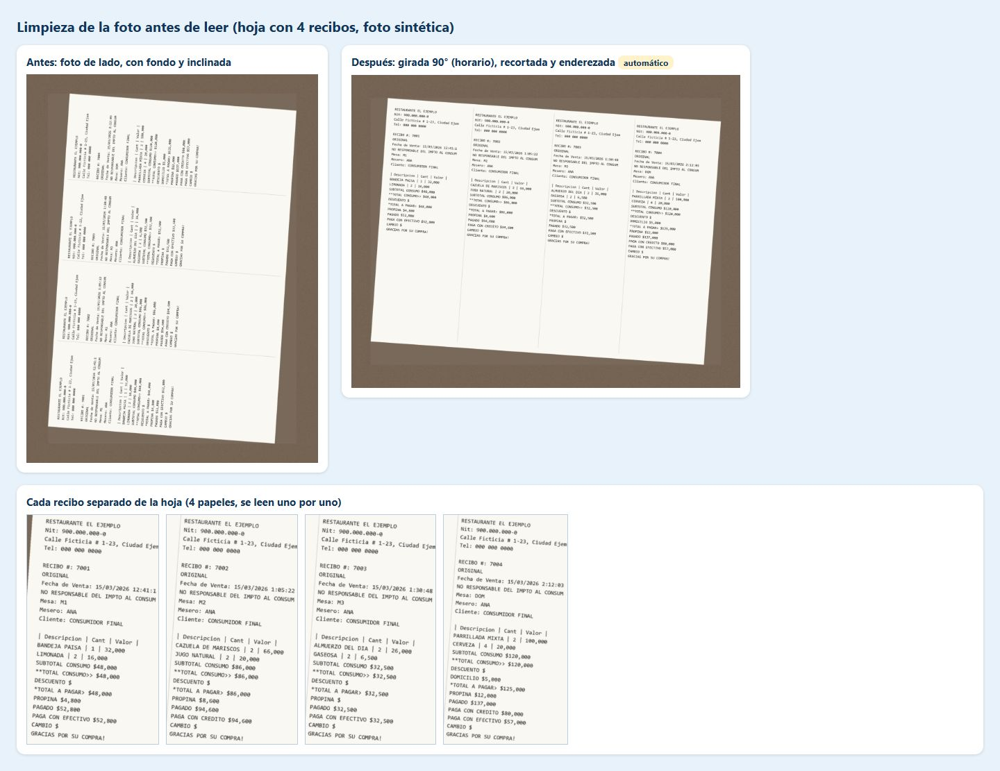
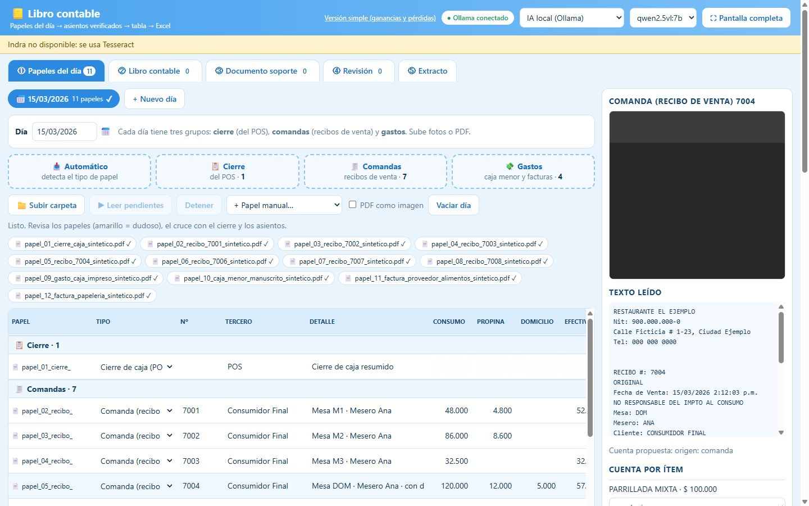
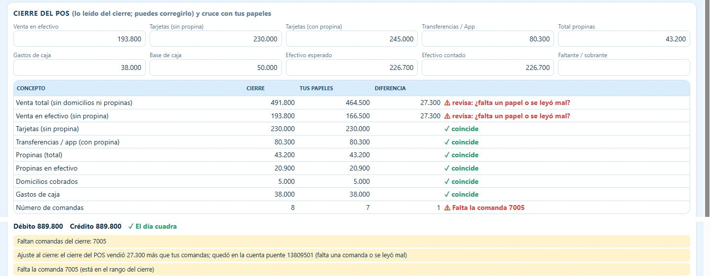
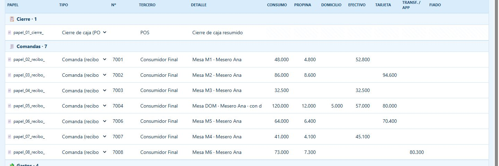
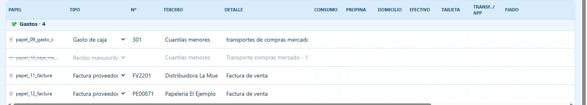
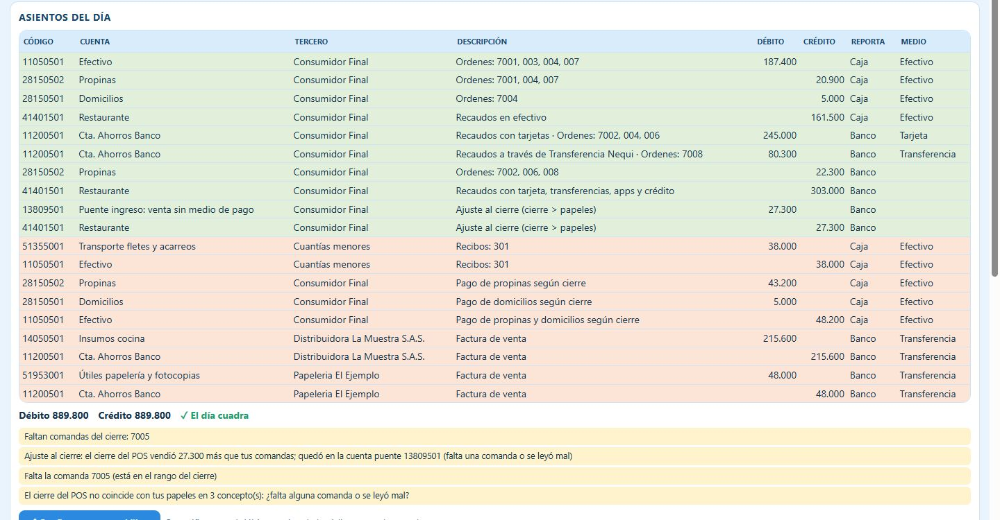
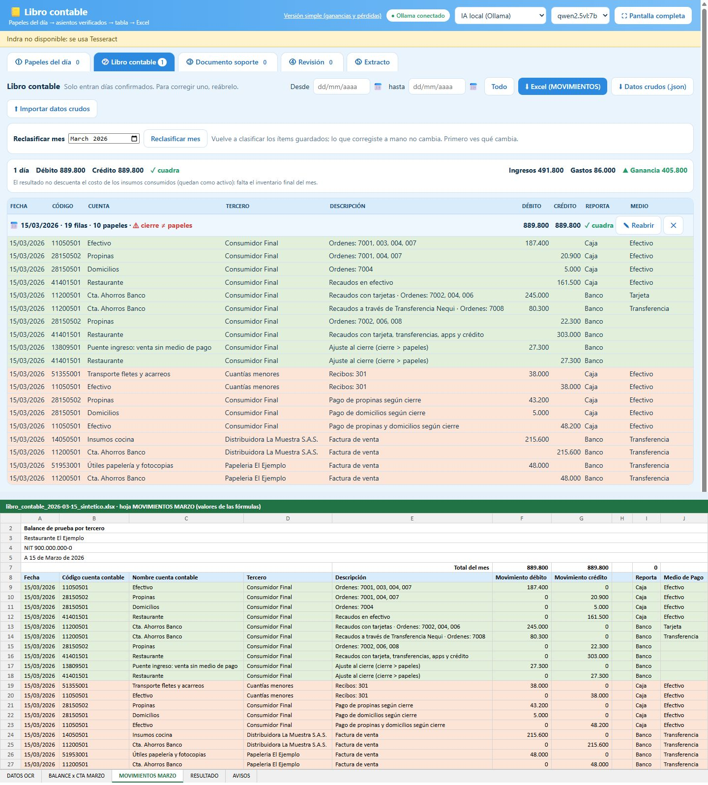
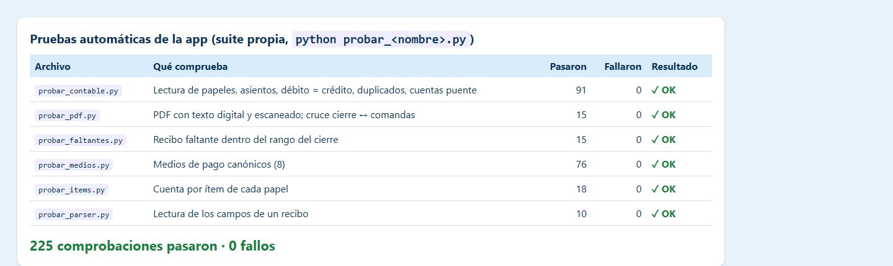

Demo · Python · Local AI
Every document shown here is invented: a made-up restaurant with test data, not any client's books.
The day's 12 files (a POS closing, 7 sales receipts, expense papers) go in as PDFs or photos. The app sorts them into closing, receipts and expenses on its own.

Why it matters: Nobody sorts a pile of paper by hand, and the day is organised before anyone reads a number.
A sideways photo of a sheet with four receipts is rotated, cropped and straightened, then cut into four separate receipts.

Why it matters: Phone photos taken in a hurry still become readable documents, one per receipt.
Digital PDFs are read as text, exactly; photos go to a vision model running on the same computer. The text it read sits next to the receipt, and every field can be edited.

Why it matters: Nothing leaves the computer, and a person can fix a misread field in seconds.
The POS closing counts 8 receipts and 27,300 more in cash sales than the papers show. The app names the gap: receipt 7005 is missing, and it parks the difference in a bridge account.

Why it matters: The day cannot be closed out of balance without anyone noticing.
Receipt 7004 was paid part in cash and part by card, with a tip and a delivery fee. Each amount lands in its own column, so every payment method is counted once.

Why it matters: Mixed payments are where hand-kept books usually go wrong.
A handwritten petty-cash slip and the printed cash expense 301 are the same transport expense. The copy is struck through and counted once.

Why it matters: Counting an expense twice would quietly understate the profit.
Each paper becomes balanced double-entry lines with an account code suggested from the supplier and past choices. The day's total: debit 889,800 and credit 889,800.

Why it matters: A bookkeeper reviews suggestions instead of typing every line.
The confirmed day goes into the monthly ledger and out to an Excel workbook. The lower half of the image is a rendering of the exported MOVIMIENTOS sheet, showing the same totals.

Why it matters: The accountant gets a file they already know how to work with.
The app's own test files check the readers, the ledger, missing receipts and payment methods: 225 checks passed across 6 test files, 0 failures.

Why it matters: Changes to the rules cannot silently break the arithmetic.